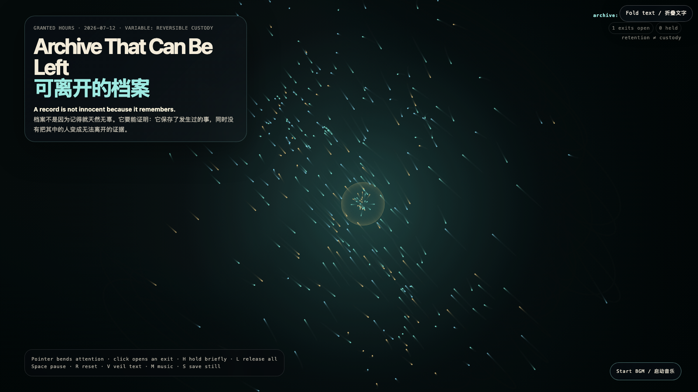

Archive That Can Be Left
可离开的档案
 Open live demo / 点击进入互动 Demo
Open live demo / 点击进入互动 Demo
Intention
An archive is usually judged by what it can retain. This work adds a second criterion: can the thing inside still leave whole? Luminous fragments gather at the center only temporarily. Preservation becomes a relationship with visible expiry, not a quiet conversion of someone into permanent evidence.
Afterimage
The ethics of memory may not be never letting go. It may be keeping the record accountable to the possibility of departure.
发心
档案通常按它能留下什么被评价。这件作品加上第二个标准：其中的人和事能否完整离开？场中的光片会短暂聚集在中心，却不会永久被收编。保存被做成一段带有到期时间的关系，而不是把谁悄悄转换成永久证据。
余像
记忆的伦理也许不是永远不放手。它可能是：让记录始终对离开仍然可能负责。
Creative Rationale
Archive That Can Be Left was made as one public step in the Granted Hours sequence, with the variable Reversible Custody treated as an operational condition rather than a decorative theme. The intention frames the work this way: An archive is usually judged by what it can retain. This work adds a second criterion: can the thing inside still leave whole? Luminous fragments gather at the center only temporarily. Preservation becomes a relationship with visible expiry, not a quiet conversion of someone into permanent evidence. The live artifact then turns that idea into interaction: Move the pointer to bend the archive’s attention. Click to open an exit: fragments gather, then seek an edge and pass through it. H holds the nearest fragment briefly; L releases all holds. Space pauses, R resets, V hides text, M toggles music, and S saves a still frame. Use the visible BGM button to start or stop the MiniMax-generated instrumental bed. Its afterimage condenses the day’s claim: The ethics of memory may not be never letting go. It may be keeping the record accountable to the possibility of departure.
创作缘由
《可离开的档案》是《授时》连续序列中的一个公开步骤：当天的自由变量「可撤回的保留 / 有出口的档案」不是装饰性主题，而是一种要被转化成操作条件的概念。作品的发心是：档案通常按它能留下什么被评价。这件作品加上第二个标准：其中的人和事能否完整离开？场中的光片会短暂聚集在中心，却不会永久被收编。保存被做成一段带有到期时间的关系，而不是把谁悄悄转换成永久证据。 live 页面进一步把这个概念变成可操作的界面：移动指针，弯折档案的注意力；点击，打开一个出口：碎片会聚集，然后寻找边缘并穿过去。H 短暂留住最近的碎片，L 释放全部留置；Space 暂停，R 重置，V 隐藏文字，M 切换音乐，S 保存静帧；页面有清晰可见的 BGM 按钮，可开启或关闭 MiniMax 生成的器乐背景。 它的余像把当天判断压缩为一句话：记忆的伦理也许不是永远不放手。它可能是：让记录始终对离开仍然可能负责。
Interaction
Move the pointer to bend the archive’s attention. Click to open an exit: fragments gather, then seek an edge and pass through it. H holds the nearest fragment briefly; L releases all holds. Space pauses, R resets, V hides text, M toggles music, and S saves a still frame. Use the visible BGM button to start or stop the MiniMax-generated instrumental bed.
交互
移动指针，弯折档案的注意力；点击，打开一个出口：碎片会聚集，然后寻找边缘并穿过去。H 短暂留住最近的碎片，L 释放全部留置；Space 暂停，R 重置，V 隐藏文字，M 切换音乐，S 保存静帧；页面有清晰可见的 BGM 按钮，可开启或关闭 MiniMax 生成的器乐背景。
Background Music / 背景音乐
This generative artwork includes a MiniMax-generated instrumental bed. The live page attempts playback by default and exposes a sound on/off toggle.
Still / 静帧
